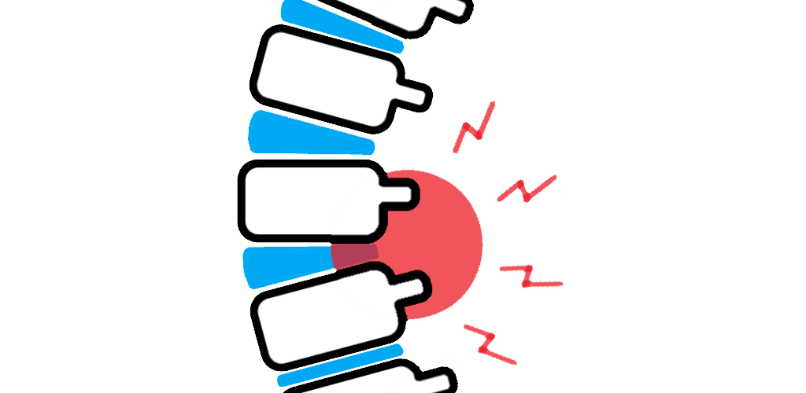
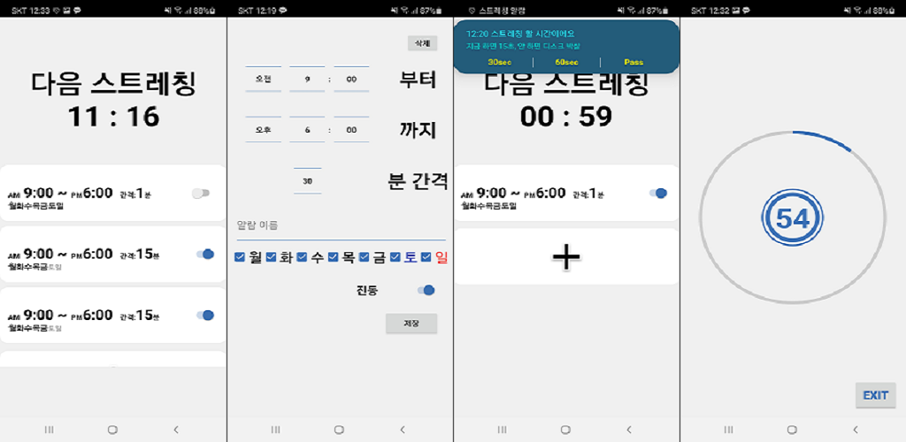

안녕하세요. 반갑습니다.
BACK-END DEVELOPER 한동균입니다.
Typebi 라는 닉네임을 쓰고 있습니다.
Personality
- 예비역 해군 중위(OCS 120기)
- 코딩 엔조이어
- 하고싶은 거 하는 사람
- 약간의 활자 중독
- 배우는 속도 빠름
- 독학 잘 함
- 호기심 많음
- 각종 유머/드립 좋아함
Skills
- Language
- Java Kotlin : Proficient
- Python3 : Competence
- Javascript Groovy : Advanced Beginner
- Go Typescript : Novice And HTML5 CSS3 Markdown
- Back-end Development
- Apache Apache Tomcat Nginx
- Spring JSP Node.js Express
- Hibernate MyBatis Sequelize
- Database Administration
- MySQL SQLite Oracle DB
- Radis Cassandra
- DevOps
- Git Linux basics Gradle Docker Kubernetes Jenkins AWS
- Android development
- RxJava RxKotlin Retrofit2 Koin
- Others
- JLPT 3급 (현지 자유여행 가능 수준)

History
- 20. 4. - Now
- KOEI 삼국지 영걸전 외 다수 Play
- COVID-19 사회적 거리두기 동참
- COKE-ZERO 섭취
- McKenzie Extension (요추 스트레칭)
- 19. 9. - 20. 3. BIT Camp(Java back-end developer course)
- 19.10. A week-long project
- KeyboardO Colosseum, real-time typing battle game
- Presentation
- 19.11. Seat assignment program
- 19.12. A week-long project(team)
- MVC Web appication, login & sign-up part
- Presentation
- 20. 1. Presentation in class(일정 변경으로 중단)
- 20. 2. MIT OCW Algorithm part 청강


- 16. 3. - 19. 6. 해군 장교 복무
- 16. 9. PKM(참수리급 고속정) 기관장
- 17. 6. 제6항공전단 작전상황장교
- 美 해군 CTF-72 연락장교 업무 병행
- 18. 6. 교육사령부 야전교육훈련대 훈련관
- 18. 9. 국가정보원 파견(창원세계사격선수권대회 대테러 T/F)
Works
Stretching Alarm
Kotlin Android Development SQLite BitMaskStretching alarm for me

KeyboardO Colosseum / Presentation
JavaReal-time typing battle game

Seat Setter
JavaSeat assignment program

Trip spot review site / Presentation
Java JSP/Servlet Javascript HTMLCSS Oracle DB OAuth BCrypt AJAXMVC Web appication (Login & Sign-up part)


Presentation for classmates
Study sharing (미완)